Un recorrido por cómo han cambiado el ocio, el tiempo libre y el viaje —desde la Antigüedad hasta la actualidad— y por las sociedades que en cada época los hicieron posibles.
Los lugares de cada etapa. Pasa el cursor por un punto para ver el hito (o haz clic). Usa los botones de abajo para filtrar por etapa.
Mapa base © OpenStreetMap · ● Grecia · ● Roma/Egipto · ● 1848–1960 · ● 1960–actualidad
Organización social: mundo de polis (ciudades-estado), sociedad estamental y esclavista (ciudadanos libres, metecos y esclavos); la democracia ateniense es de los ciudadanos.
Economía: agraria, artesanal y de comercio marítimo; el trabajo esclavo libera al ciudadano para la política y el pensamiento, así que el ocio (scholé) es un privilegio de la ciudadanía.
Organización social: República e Imperio, muy jerárquica (patricios, plebeyos, libertos y esclavos), unificada bajo la Pax Romana.
Economía: esclavista, urbana y de conquista, con moneda común; la élite acumula excedente y tiempo libre, y el Estado organiza el ocio de masas (panem et circenses).
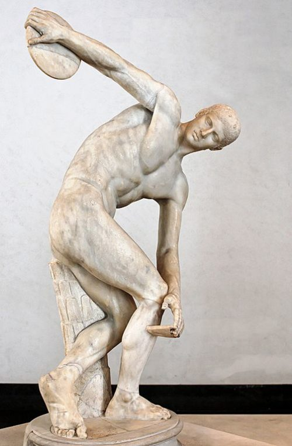
⤢ ampliar Discóbolo (copia romana) · Wikimedia Commons¿Qué ocurre? se institucionalizan festivales religioso-deportivos que reúnen cada cuatro años a viajeros de toda la Hélade; una tregua sagrada (ekecheiría) garantiza el paso seguro.
Primer desplazamiento colectivo por espectáculo, culto y competición: el antecedente del viaje por ocio y del actual "turismo de eventos".
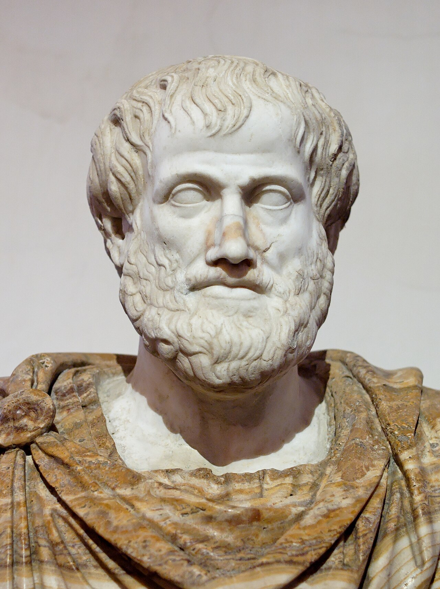
⤢ ampliar Busto de Aristóteles · Wikimedia Commons (dominio público)¿Qué ocurre? Aristóteles define el ocio como el fin de la vida —contemplación, política y saber—, opuesto a la ascholía; la meta última es la felicidad o eudaimonía.
Raíz cultural del ocio como valor y de la felicidad como meta; base teórica de toda la historia del ocio y del turismo. De scholé viene "escuela".
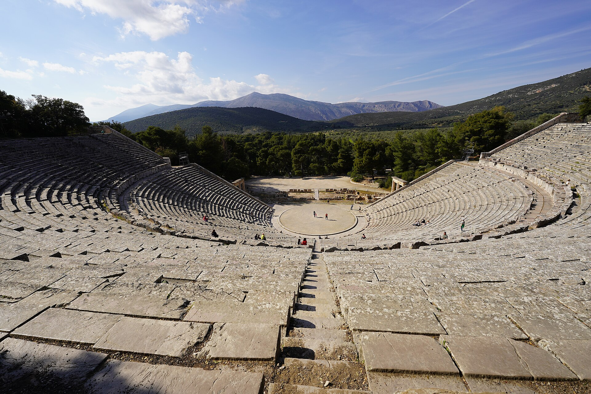
⤢ ampliar Teatro de Epidauro · Wikimedia Commons¿Qué ocurre? surgen desplazamientos para consultar el oráculo (Delfos), sanar en los asclepieia (Epidauro, Cos) e "ir a ver" festivales (theoría).
Antecedentes del turismo religioso y del turismo de salud/termal; la theoría prefigura el viaje por contemplación (raíz de "teoría").
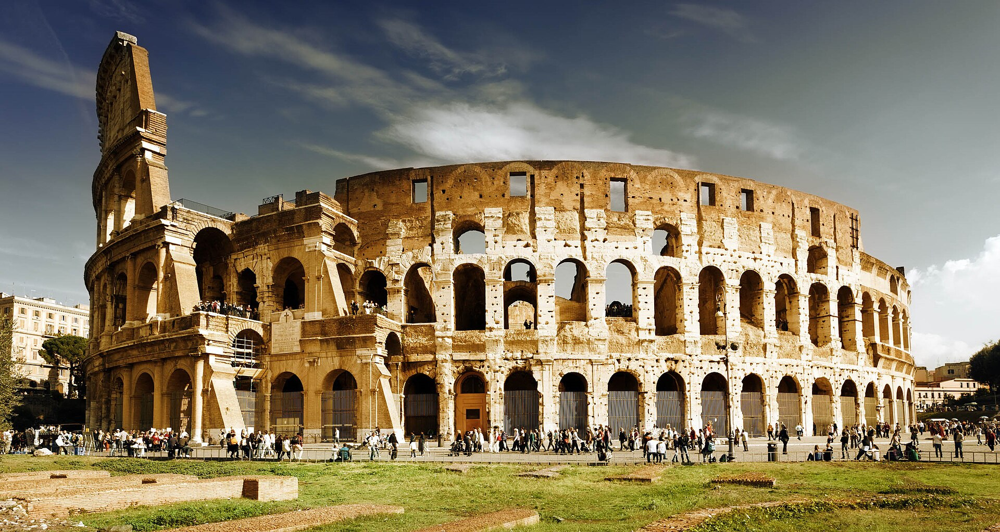
⤢ ampliar Coliseo de Roma · Wikimedia Commons¿Qué ocurre? se distingue el otium (ocio) del negotium (negocio). El Estado organiza el ocio de masas —circo y juegos— y multiplica los días festivos (feriae).
El ocio se vuelve fenómeno social y político, de élite y de masas; se consolida el binomio trabajo/ocio que llega hasta hoy.
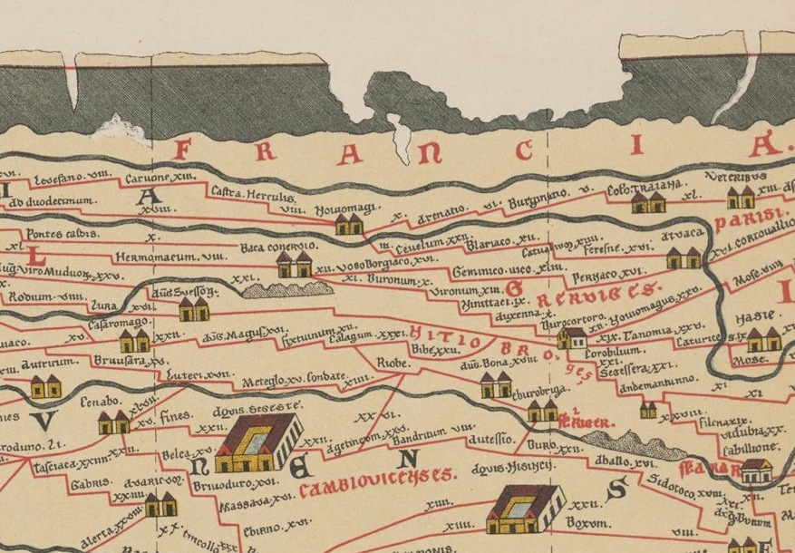
⤢ ampliar Tabula Peutingeriana · Wikimedia Commons (dominio público)¿Qué ocurre? por primera vez existen las condiciones para viajar lejos con seguridad y comodidad: calzadas, posadas (mansiones) y guías de ruta.
Aparece la infraestructura y el "sistema" del viaje: la base logística sin la cual el turismo posterior no sería posible.
¿Qué ocurre? surge un destino estacional de placer —balnearios termales, villas de lujo y vida social junto al mar— en la bahía de Nápoles.
Antecedente directo del destino turístico, del turismo de sol y costa y del termalismo/turismo de salud.
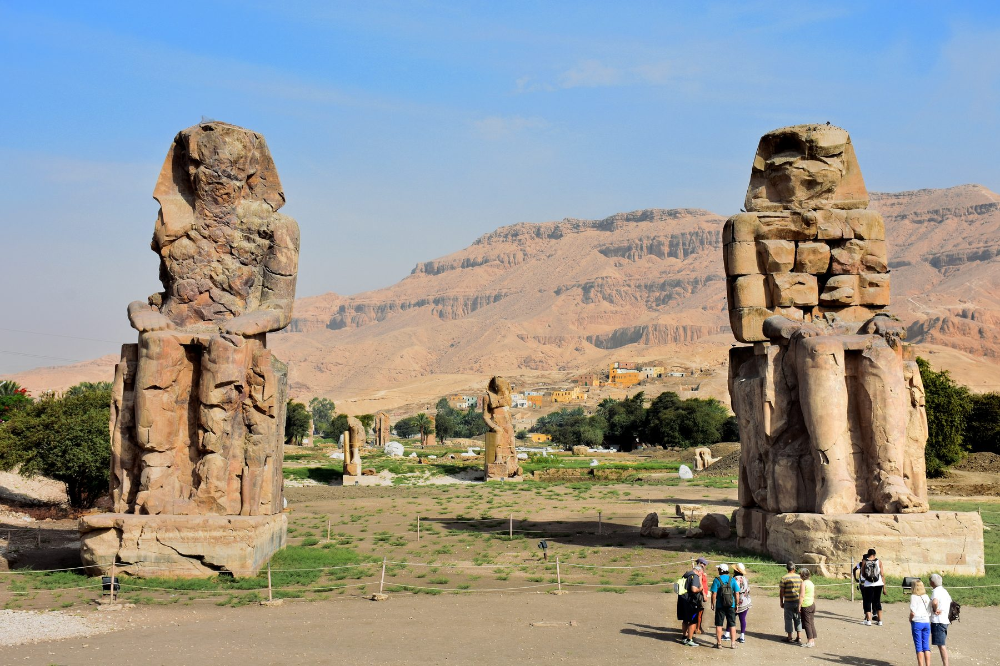
⤢ ampliar Colosos de Memnón · Wikimedia Commons¿Qué ocurre? romanos viajan a Grecia y Egipto a "ver" monumentos; Pausanias escribe la Descripción de Grecia, considerada la primera guía de viajes.
Nace el turismo cultural y patrimonial y el primer antecedente de la guía turística; prefigura el Grand Tour.
Completar: características de la sociedad (organización social y economía) · hito(s) · ¿qué ocurre? · importancia para el ocio/turismo · dato o cita memorable · imagen/recurso con su fuente · referencia (APA).
Completar: sociedad y economía · hito(s) · ¿qué ocurre? · importancia · dato memorable · imagen/fuente · referencia (APA).
Completar: sociedad y economía · hito(s) · ¿qué ocurre? · importancia · dato memorable · imagen/fuente · referencia (APA).
Completar: sociedad y economía · hito(s) · ¿qué ocurre? · importancia · dato memorable · imagen/fuente · referencia (APA).
Organización social: sociedad industrial y de posguerra; auge de la clase media urbana y de un movimiento obrero que conquista derechos (jornada, descanso, vacaciones).
Economía: industrial-capitalista, con ferrocarril, vapor, producción en masa y, después, aviación. Estas condiciones hacen posible el turismo moderno y su masificación. Investigación: Dilvana Rincón
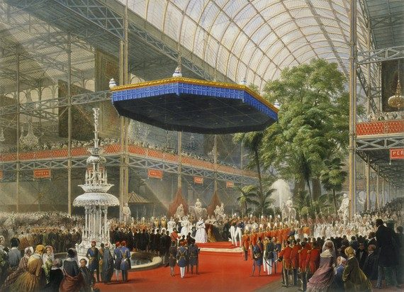
⤢ ampliar Gran Exposición de Londres, 1851 · Wikimedia Commons (dominio público)¿Qué ocurre? Thomas Cook organiza el traslado de más de 165.000 personas a la Gran Exposición con billetes de ferrocarril integrados y consolida sus excursiones organizadas.
Sienta las bases de la agencia de viajes y del paquete turístico masivo: el viaje deja de ser solo de élites.
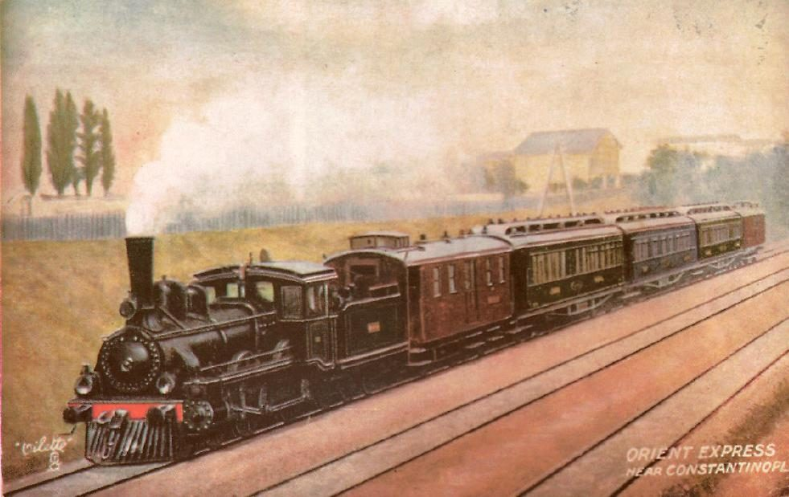
⤢ ampliar Orient Express (postal histórica) · Wikimedia Commons (dominio público)¿Qué ocurre? La Compagnie Internationale des Wagons-Lits inaugura el Orient Express, que conecta París con Estambul con lujo a bordo.
Introduce la hotelería de lujo en movimiento y fija un estándar internacional de confort en el viaje.
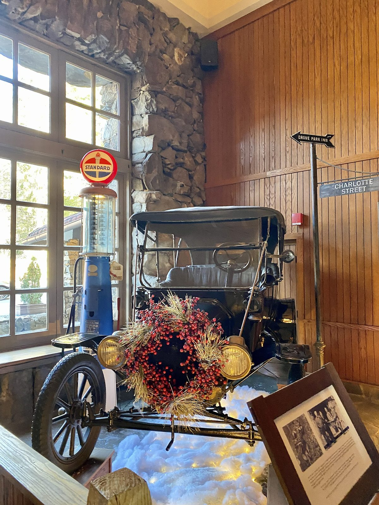
⤢ ampliar Ford Modelo T · Wikimedia Commons¿Qué ocurre? Ford lanza el Modelo T y la producción en cadena abarata el automóvil, poniéndolo al alcance de la clase media.
Nace el turismo por carretera: libertad de desplazamiento individual, rutas, moteles y estaciones de servicio.
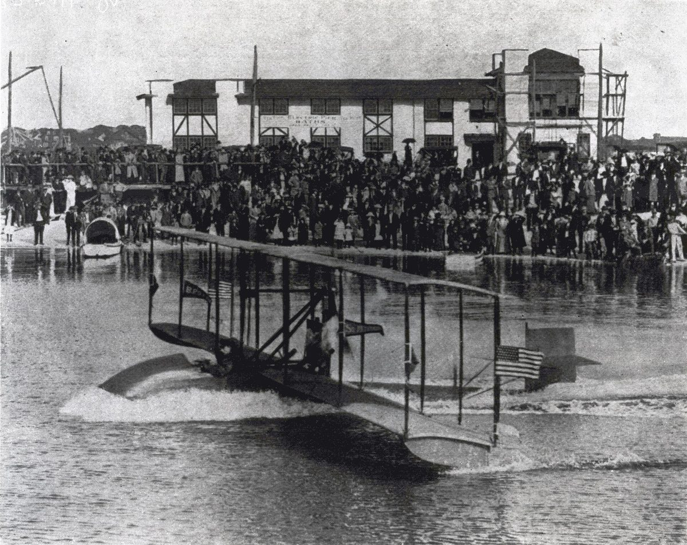
⤢ ampliar St. Petersburg–Tampa Airboat Line, 1914 · Wikimedia Commons (dominio público)¿Qué ocurre? La St. Petersburg–Tampa Airboat Line (Florida) realiza el primer servicio aéreo comercial regular de pasajeros del mundo.
Demuestra la viabilidad del transporte aéreo de pasajeros: el germen de la aviación comercial.
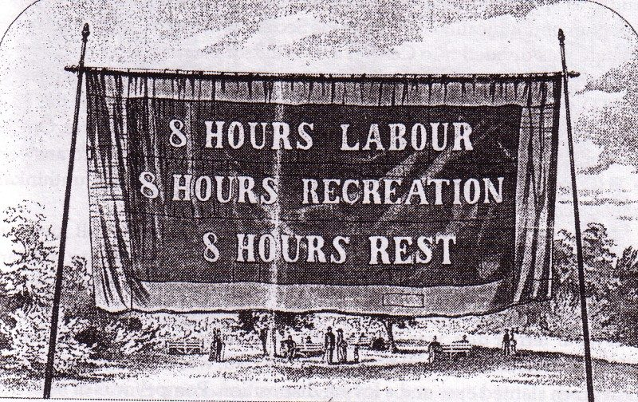
⤢ ampliar Estandarte de las 8 horas · Wikimedia Commons (dominio público)¿Qué ocurre? Tras décadas de lucha obrera (Haymarket, 1886, origen del 1.º de mayo), la OIT aprueba en 1919 su primer convenio: 8 horas diarias y 48 semanales.
Reducir la jornada crea el tiempo libre cotidiano: junto con las vacaciones pagadas, uno de los dos pilares del turismo de masas.
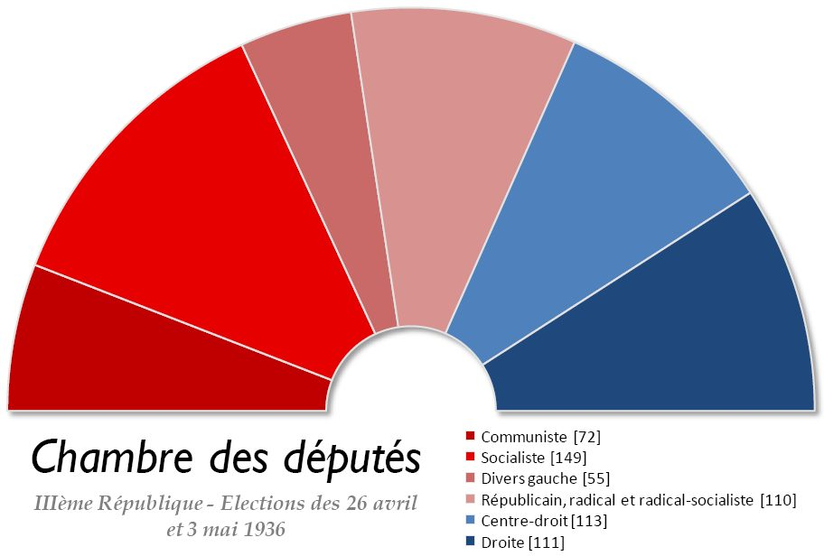
⤢ ampliar Cámara de Diputados, Frente Popular (Francia, 1936) · Wikimedia Commons¿Qué ocurre? En Francia, el Frente Popular establece por ley las vacaciones pagadas (congés payés); el derecho al descanso se consagra luego en la DUDH (1948, art. 24).
Sin tiempo libre remunerado no hay turismo de masas: el ocio se vuelve un derecho social y dispara la demanda turística.
¿Qué ocurre? En La Habana se funda la Asociación Internacional de Transporte Aéreo (IATA), que estandariza tarifas, rutas, billetes y normas de seguridad.
Hace posible la interconexión de aerolíneas a escala global: ordena el sistema que sostendrá el turismo aéreo.
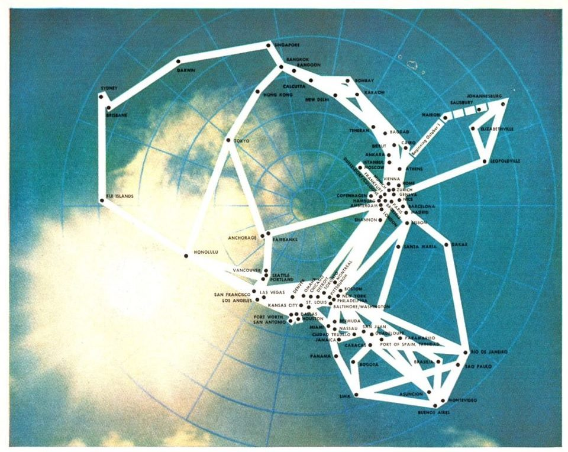
⤢ ampliar Mapa de rutas de Pan Am · Wikimedia Commons¿Qué ocurre? Pan Am inicia vuelos transatlánticos regulares con el Boeing 707 (París–Nueva York).
Reduce a la mitad los tiempos de viaje oceánico y da inicio al turismo internacional masivo por aire.
Organización social: sociedad globalizada, de consumo y cada vez más digital; amplia clase media viajera y, luego, economía colaborativa.
Economía: de servicios, tecnología y plataformas, con creciente conciencia ambiental (sostenibilidad, overtourism). Investigación: Dilvana Rincón
¿Qué ocurre? Pan Am realiza el primer vuelo comercial del Boeing 747 (Nueva York–Londres, 22 de enero de 1970).
El fuselaje ancho reduce el costo por asiento y democratiza el vuelo transcontinental: turismo masivo internacional.
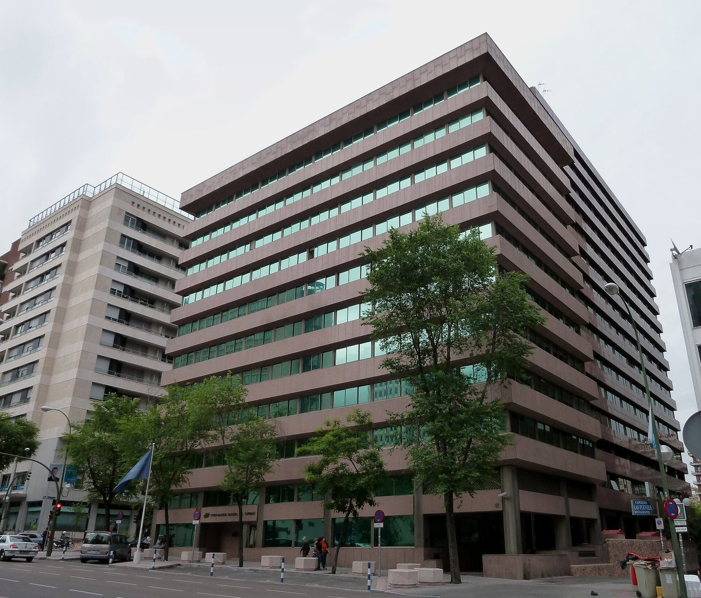
⤢ ampliar Sede de la OMT / ONU Turismo, Madrid · Wikimedia Commons¿Qué ocurre? Se crea la OMT (hoy ONU Turismo), que coordina y promueve el turismo mundial y produce estadísticas y políticas.
Institucionaliza el turismo como sector económico y objeto de políticas públicas y gobernanza.
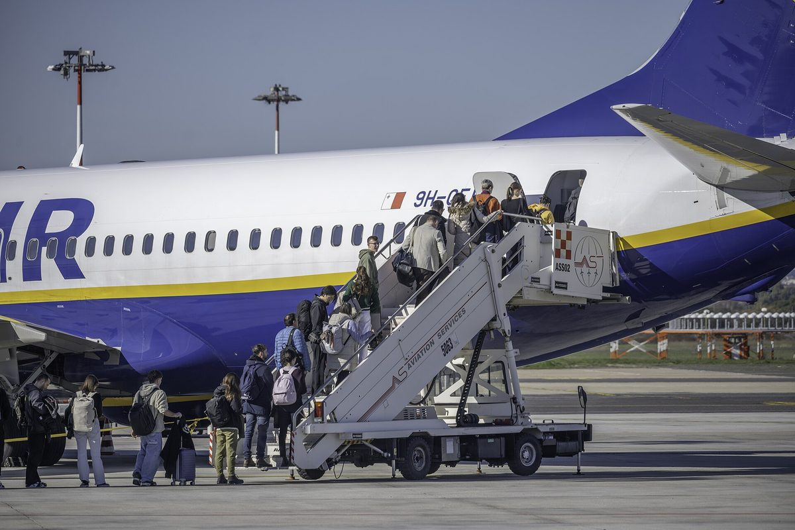
⤢ ampliar Embarque en una aerolínea low-cost · Wikimedia Commons¿Qué ocurre? Tras la desregulación aérea de EE. UU. (1978), en los años 90 se expanden las low-cost en Europa (Ryanair, EasyJet).
Las tarifas bajísimas popularizan las escapadas de fin de semana (city breaks) como hábito de consumo global.
¿Qué ocurre? Nacen Expedia y Booking.com; el control de la reserva pasa de la agencia tradicional al consumidor final.
Descentraliza la distribución de vuelos y hoteles a escala planetaria: el viajero arma su propio viaje.
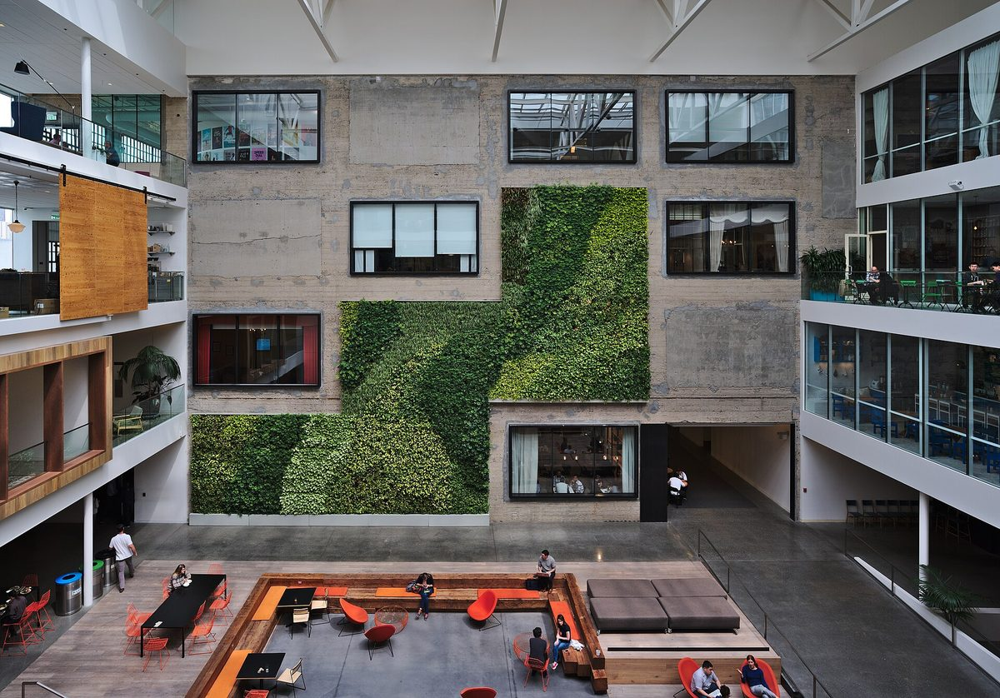
⤢ ampliar Economía de plataformas (sede tecnológica) · Wikimedia Commons¿Qué ocurre? Se funda Airbnb (San Francisco); el modelo peer-to-peer (P2P) irrumpe en el alojamiento turístico.
Altera el modelo hotelero, redefine las dinámicas urbanas y abre el debate sobre la turistificación.
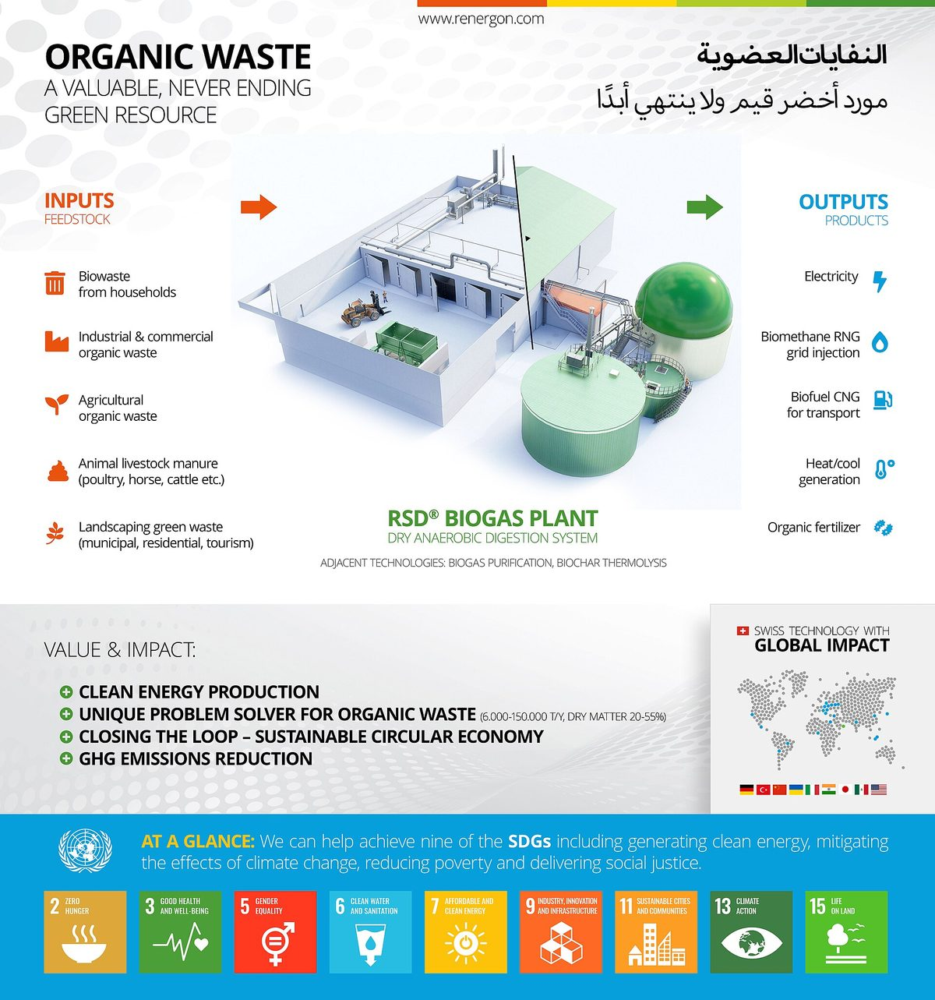
⤢ ampliar Objetivos de Desarrollo Sostenible (ONU) · imagen ilustrativa¿Qué ocurre? La ONU adopta los ODS; el turismo sostenible entra al centro de la agenda (2017: Año Internacional del Turismo Sostenible).
La sostenibilidad y el overtourism pasan a ser el marco para planificar y gestionar destinos.
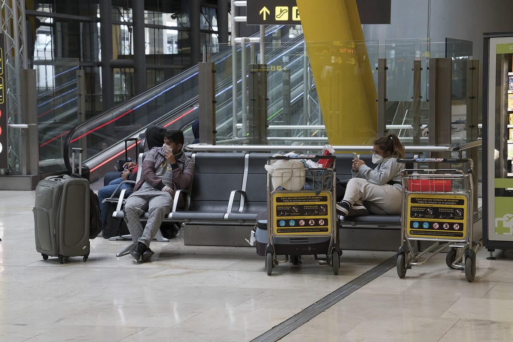
⤢ ampliar Aeropuerto durante la pandemia, 2020 · Wikimedia Commons¿Qué ocurre? El cierre masivo de fronteras reduce las llegadas internacionales cerca de un 73 % en 2020: el mayor shock de la historia del turismo.
Acelera el trabajo remoto (nómadas digitales), lo digital y el interés por la sostenibilidad y el turismo de menor densidad.
La Edad Antigua no es una cronología suelta: dialoga con la teoría vista en clase.
El otium/negotium y el ocio como construcción social e histórica; el tiempo libre que cada época significa a su manera.
El vínculo ocio–salud–calidad de vida, que ya asoma en los santuarios de Asclepio y en el termalismo de Baiae.
La felicidad como eudaimonía: la raíz griega del bienestar subjetivo que hoy persigue el turismo experiencial.
{kind=link}
{kind=link}
{kind=link}
{kind=link}
{kind=link}
{kind=link}
{kind=link}
{kind=link}
{kind=link}
{kind=link}
{kind=link}
{kind=link}
{kind=link}
{kind=link}
{kind=link}
{kind=link}
{kind=link}
{kind=link}
{kind=link}
{kind=link}
{kind=link}